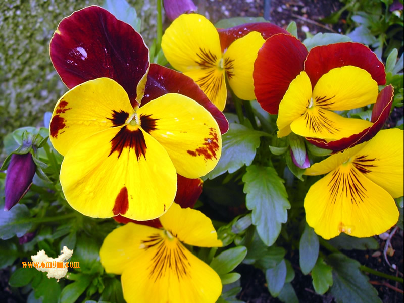

B10456017
•中文名稱：蝴蝶花
•英文名稱：Poorman's Orchid，Butterfly Flower，Schizanthus，Fringe Flower
•學名：Schizanthus pinnatus Ruiz & Pav.
•科名：茄科(Solanaceae)蝴蝶花屬(Schizanthus)
•別名：蝴蝶草、蛾蝶花、蛾蝶草、群蝴蝶、薺菜花、平民蘭
•原產地：智利
•分佈：園藝栽培，在台灣栽植的人並不多。
•用途：
園藝觀賞用：蝴蝶花開花時花團錦簇，花色豔麗，色彩絢爛，株型緊密，盛開時呈現一片五彩繽紛、嬌豔瑰麗的盛況，別具異國情調，極其嫵媚動人；且花期甚長，春至初夏花開花謝，絡繹不絕，堪稱園藝栽培中春季盆花的後起之秀；最適合花壇或盆栽，亦可作高級切花素材。
•莖：一至二年生草本，株高 20~100 公分，多分枝，莖葉密生微黏腺毛。
•葉：單葉互生，稀對生，1~2回羽狀複葉，小葉有不規則淺裂或深裂，全緣或粗鋸齒緣，葉色深綠，中肋明顯；無托葉。
•花：總狀圓錐花序，頂生或腋生；花萼筒狀，5深裂，僅基部結合，裂片披針形，果時宿存並增大；花兩性，多數，花冠杯狀，直徑 1.8~4 公分，冠檐 5 裂，稀 4 裂或 6~9 裂，裂片唇形，大小不一，對稱排列，花色富變化，有紅、粉紅、純白、酒紅、紫、奶油黃、深桃、紅白雙色、桃白雙色、紫白雙色等色，通常上側 3 裂片較大，有深色暈染，近冠喉處呈半圓形黃色斑塊，鑲嵌紫色或紅色斑點，下側 2 裂片較小；雄蕊與花冠裂片數同，近等長或其中1至數枚稍短，著生於花冠筒上，花絲絲狀，上彎，花藥背著，縱裂；花柱單一，子房 2~5 室，中軸胎座，胚珠多數。花期春至初夏。
•果實：果實為蒴果，花後結蒴果；種子胚乳豐富，胚彎。
•特性：蝴蝶花開花時花團錦簇，色彩絢爛，盛開時呈現一片五彩繽紛、嬌豔瑰麗的盛況，別具異國情調，極其嫵媚動人，且花期甚長，春至初夏花開花謝，絡繹不絕，堪稱園藝栽培中春季盆花的後起之秀，最適合花壇或盆栽，亦可作高級切花素材。蝴蝶花品種有高稈、矮稈之分，高稈品種生長勢強，花徑較大，花序較長，大多用作花壇或切花，通常不作盆栽，一般少見栽培；矮稈品種分枝性強，株型矮壯圓整，開花繁密旺盛，是目前最主要的栽培品種；另有雜交種如小蝴蝶花（S. gracilis）、雜種蝴蝶花（S. wisetonensis）、尖裂蝴蝶花（S. retusus）等，均婀娜多姿，各具千秋。蝴蝶花定植後可摘心一次，讓分枝增加，如此花朵數會比較多，花期長，可於第一次開花後，將其凋謝的花朵剪除，促其花芽再分化，這樣還會再開花一次。葉片為羽狀複葉，花、葉搭配起來，好似整把的花束，極為雅緻。
